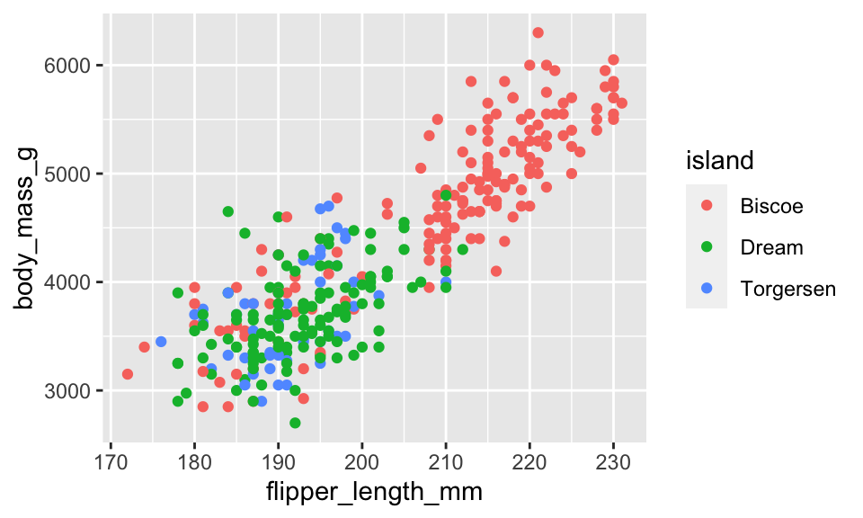
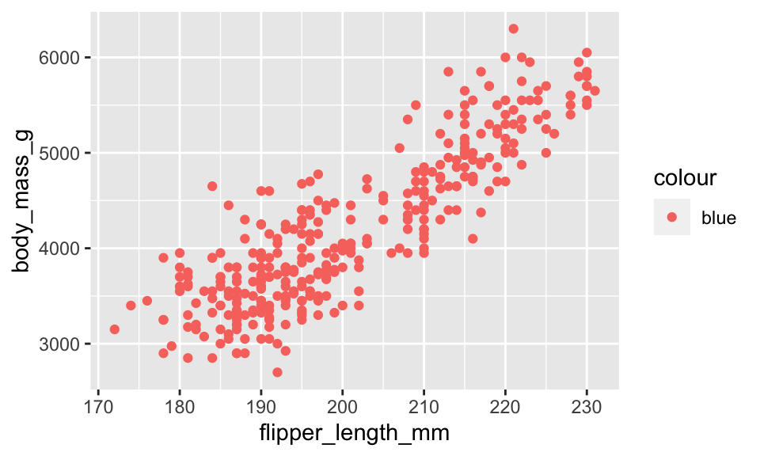
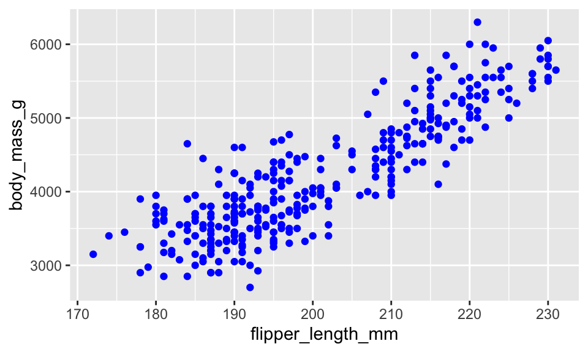
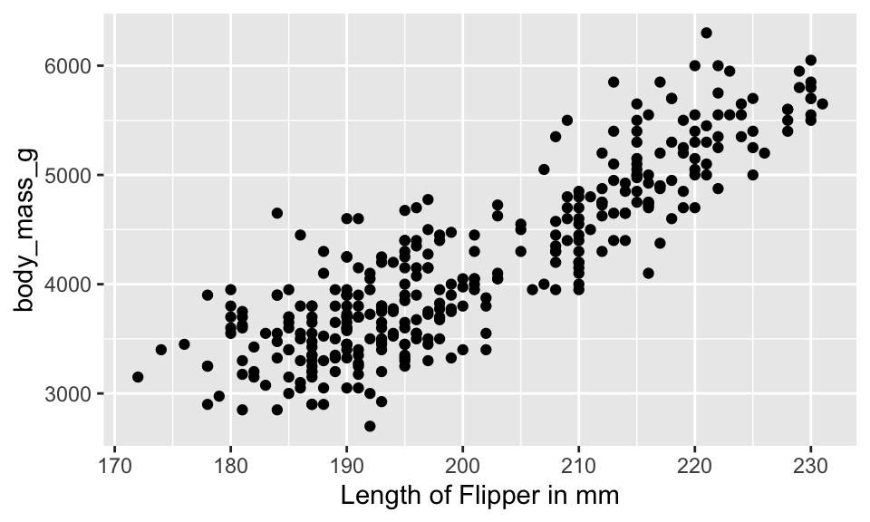
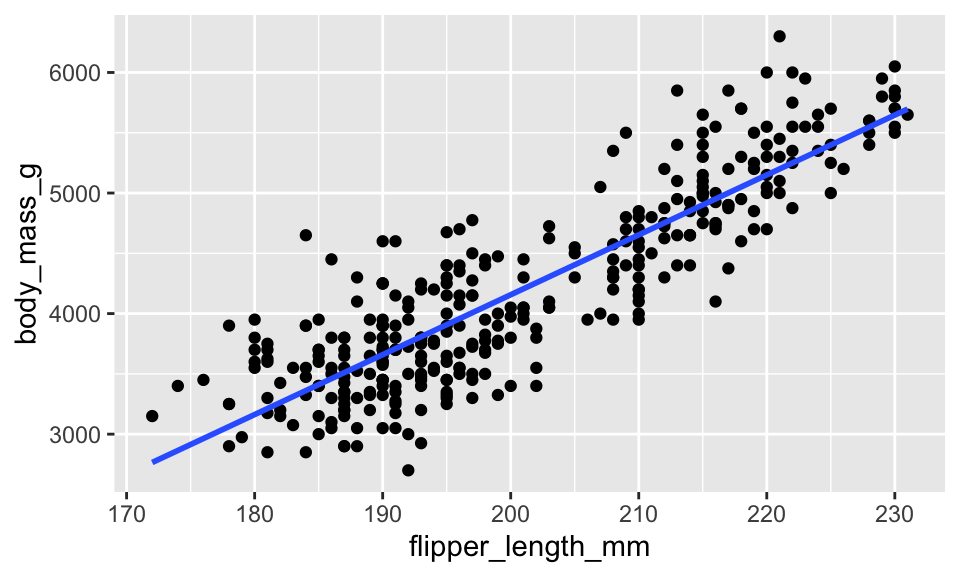
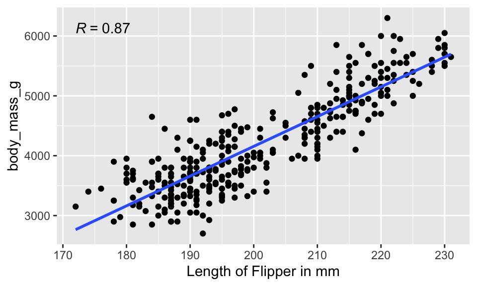
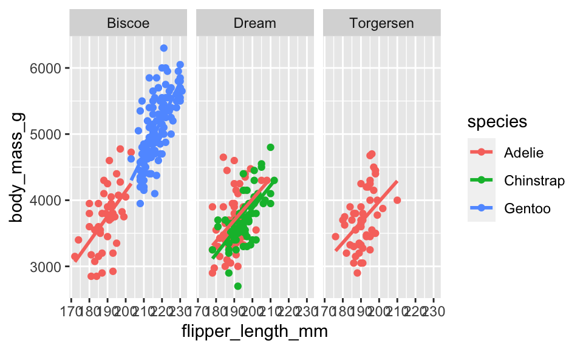
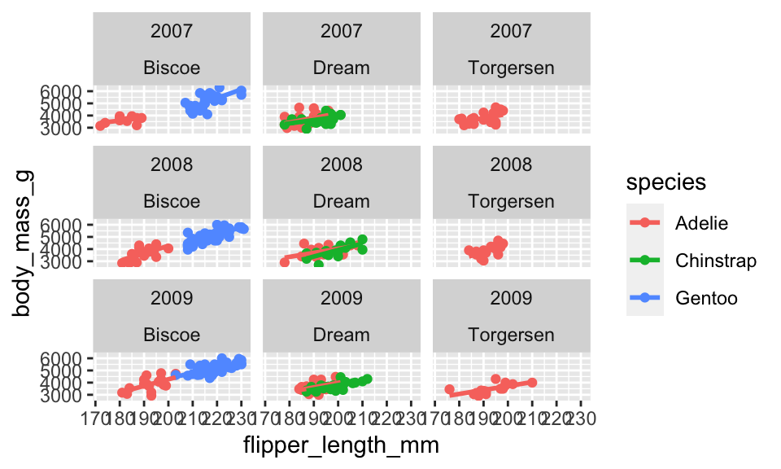

library(palmerpenguins)
data("penguins")
names(penguins)[1] "species" "island" "bill_length_mm"
[4] "bill_depth_mm" "flipper_length_mm" "body_mass_g"
[7] "sex" "year" Building on the work we’ve done this week to understand quantitative variables, today’s lab will focus on creating linear models and creating scatterplots. First, however, we build up to scatterplots by focusing on how layers of plots work in the ggplot2 package.
The goals for today include:
+) using the ggplot2 packageknit early and often. In fact, go ahead and knit your .Rmd file right now. Maybe set a timer so that you knit every 5 minutes. Do not wait until you are done with the assignment to knit.
The assignment part of the lab is ONLY the last six questions at the very bottom. However, the commands in the first half of the assignment are key to doing the second half.
Save the .Rmd file somewhere you can find it. Don’t keep everything in your downloads folder. Maybe make a folder called StatsHW or something. That folder could live on your Desktop. Or maybe in your Dropbox.
A really great series of examples to work through by Hadley Wickham: https://r4ds.had.co.nz/data-visualisation.html
Some things to notice:
+. (When layering for data wrangling, use %>%.)geom_XXX() will put the XXX-type-of-plot onto the graph.aes() is the function which takes the data columns and puts them onto the graph. aes() is used only with data columns and you always need it if you are working with data variables.In this lab we will explore the data using ggplot() which is included in the tidyverse package. We’ll start by looking at the penguin data in the palmerpenguin package. Remember, you’ll need to install the package the first time you use it!
library(palmerpenguins)
data("penguins")
names(penguins)[1] "species" "island" "bill_length_mm"
[4] "bill_depth_mm" "flipper_length_mm" "body_mass_g"
[7] "sex" "year" A ggplot has layers. And each layer is connected by the + symbol. We might want to know if flipper_length_m is correlated to body_mass_g. In order to investigate, we’ll create a scatterplot. Every ggplot has a minimum of two layers. The first layer sets the plot, the second later draws the points.
Run the first layer first:
penguins %>%
ggplot()
And now add some points (note the difference in the use of %>% vs +):
penguins %>%
ggplot() +
geom_point(aes(x = flipper_length_mm, y = body_mass_g))aes()The aes() function plays a very specific role in ggplots, and it is worth discussing. The idea behind aes() (which stands for “aesthetic”, but I don’t find that word helpful) is to pull out the columns of the dataframe (the variables).
Let’s say we want to color the points based on the island from which the penguins came.
penguins %>%
ggplot() +
geom_point(aes(x = flipper_length_mm, y = body_mass_g, color = island))
Or maybe what we want is to color all of the points blue:
penguins %>%
ggplot() +
geom_point(aes(x = flipper_length_mm, y = body_mass_g, color = "blue"))
Wait, that didn’t work. Why not? It is because blue is not a column in the dataset! (And no, it won’t help if you remove the quotes, but go ahead and try it to see what happens.)
Remember that the aes() function will only and always pull out the columns of the dataset! So if you want the points to be blue, go ahead and make them blue, just don’t try to color inside the aes()
penguins %>%
ggplot() +
geom_point(aes(x = flipper_length_mm, y = body_mass_g), color = "blue")
Some other things to try … “size = …” or “shape = …” within the aes() will give you different plotting symbols. Try it out! You might play around with setting size inside aes() with a variable, and setting size outside aes() with a number.
There are so many layers we can add! Let’s try some…
See the code below. What do you think the layer ylab() does? What do you think the layer ggtitle() does? Try them out!
penguins %>%
ggplot() +
geom_point(aes(x = flipper_length_mm, y = body_mass_g)) +
xlab("Length of Flipper in mm")
The “method” used for adding a line to the plot is “lm” which stands for linear model. Try another option: method = "loess". Also, se = FALSE means that we don’t want an error bound on the line. What happens when you set se = TRUE?
penguins %>%
ggplot(aes(x = flipper_length_mm, y = body_mass_g)) +
geom_point() +
geom_smooth(method = "lm", se = FALSE)
xlab("Length of Flipper in mm")$x
[1] "Length of Flipper in mm"
attr(,"class")
[1] "labels"aes() information go?Consider the following information: aes(x = flipper_length_mm, y = body_mass_g, color = island). Type that phrase into the ggplot as follows.
color = islands for “C”color = islands for “B”Also, the code below won’t run until after you change the chunk to eval = TRUE:
penguins %>%
ggplot("A") +
geom_point("B") +
geom_smooth("C", method = "lm", se = FALSE)Running a linear model and/or calculating the correlation is a matter of learning the linear model syntax. For most (all?) of our models we will use the following syntax to tell the model which variable is the response variable and which variable is the explanatory variable:
response variable ~ explanatory variable
The linear model takes the data as a later argument, so we use the period . to indicate where the dataset gets piped into the function.
The only thing we’ve talked about with respect to the linear model is the first column of the output (called “estimate”). The intercept is \(b_0 = -5780.83\) g, and the slope is \(b_1 = 49.69\) g/mm.
penguins %>%
lm(body_mass_g ~ flipper_length_mm, data = .) %>%
tidy()# A tibble: 2 × 5
term estimate std.error statistic p.value
<chr> <dbl> <dbl> <dbl> <dbl>
1 (Intercept) -5781. 306. -18.9 5.59e- 55
2 flipper_length_mm 49.7 1.52 32.7 4.37e-107The correlation is always calculated across pairs of variables, but R can calculate the correlation for lots of pairs at a time.
use = "pairwise.complete.obs".penguins %>%
select(body_mass_g, flipper_length_mm, bill_length_mm, bill_depth_mm) %>%
cor(use = "pairwise.complete.obs") body_mass_g flipper_length_mm bill_length_mm bill_depth_mm
body_mass_g 1.0000000 0.8712018 0.5951098 -0.4719156
flipper_length_mm 0.8712018 1.0000000 0.6561813 -0.5838512
bill_length_mm 0.5951098 0.6561813 1.0000000 -0.2350529
bill_depth_mm -0.4719156 -0.5838512 -0.2350529 1.0000000To calculate the correlations by group, use group_by() and summarize():
penguins %>%
group_by(island) %>%
summarize(r_mass_flip = cor(body_mass_g, flipper_length_mm, use = "pairwise.complete.obs")) # A tibble: 3 × 2
island r_mass_flip
<fct> <dbl>
1 Biscoe 0.877
2 Dream 0.525
3 Torgersen 0.436Using the ggpubr package, we can add the correlation to the plot:
# sometimes people have trouble loading the ggpubr package
# if you are having trouble with ggpubr, change the code chunk
# to: ```{r eval = FALSE}
library(ggpubr)
penguins %>%
ggplot(aes(x = flipper_length_mm, y = body_mass_g)) +
geom_point() +
geom_smooth(method = "lm", se = FALSE) +
stat_cor(aes(label = ..r.label..)) +
xlab("Length of Flipper in mm")
Often the visualization is much better if the plots are distinct from one another. We use faceting to create different plots.
penguins %>%
ggplot(aes(x = flipper_length_mm, y = body_mass_g, color = species)) +
geom_point() +
geom_smooth(method = "lm", se = FALSE) +
facet_wrap(~island)
We can facet by more than one variable:
penguins %>%
ggplot(aes(x = flipper_length_mm, y = body_mass_g, color = species)) +
geom_point() +
geom_smooth(method = "lm", se = FALSE) +
facet_wrap(year~island)
The data which will be used on the part of the lab to be turned in (called gapminder) can be found in the package dslabs.
Let’s load the packages.
library(tidyverse) # ggplot lives in the tidyverse
library(dslabs) # dataset for the lab
data(gapminder)Gapminder is a creation of Hans Rosling and his team to collect and visualize country level information over time. The dslabs R package and gapminder dataset provide a few interesting variables for us to work with.
names(gapminder)[1] "country" "year" "infant_mortality" "life_expectancy"
[5] "fertility" "population" "gdp" "continent"
[9] "region" glimpse(gapminder)Rows: 10,545
Columns: 9
$ country <fct> "Albania", "Algeria", "Angola", "Antigua and Barbuda"…
$ year <int> 1960, 1960, 1960, 1960, 1960, 1960, 1960, 1960, 1960,…
$ infant_mortality <dbl> 115.40, 148.20, 208.00, NA, 59.87, NA, NA, 20.30, 37.…
$ life_expectancy <dbl> 62.87, 47.50, 35.98, 62.97, 65.39, 66.86, 65.66, 70.8…
$ fertility <dbl> 6.19, 7.65, 7.32, 4.43, 3.11, 4.55, 4.82, 3.45, 2.70,…
$ population <dbl> 1636054, 11124892, 5270844, 54681, 20619075, 1867396,…
$ gdp <dbl> NA, 13828152297, NA, NA, 108322326649, NA, NA, 966778…
$ continent <fct> Europe, Africa, Africa, Americas, Americas, Asia, Ame…
$ region <fct> Southern Europe, Northern Africa, Middle Africa, Cari…Describe one thing you learned from someone in your learning community this week (it could be: content, logistical help, background material, R information, etc.) 1-3 sentences.
Create a scatterplot with life expectancy on the y-axis and fertility rate on the x-axis. Color the points based on their continent. Change the x and y axis labels to be more descriptive. (Note: the plot isn’t going to be very beautiful.)
Make two graphs which are similar to the plot in the previous questions. First, use only observations from 1962 by filter()ing on year. Make a second scatterplot for observations from 2015. (It is possible, and fun!, to use filter() to get both years and then to apply facet_wrap() to create side-by-side plots.)
Name one difference and one similarity in the pair of plots from 1962 and 2015.
On each of the separate plots (1962 and 2015), add the linear model to the plot (separate linear model for each continent).
Also add (to each of the 1962 and 2015 plots separately) a single linear regression which is fit on all countries together simultaneously. Color the overall regression line black.
Calculate the correlation between life expectancy and fertility separately for the two years above and each continent (that is, calculate 10 different correlation values). Provide 1-2 sentences describing how the numeric correlation values are consistent with what you observed in the plot above.
Hint1: use filter() only once to get both years using the “or” command: |.
Hint2: group_by() can take two arguments (separated by a comma)!
Your code should be only four lines and look something like this.
data %>%
filter(...) %>%
group_by(...) %>%
summarize(...)Calculate the intercept and slope describing the least squares regression model regressing life expectancy (the response variable) on fertility (the explanatory variable). Use 2015 and all continents. Write down the full model (hint: when writing the model down, either use a hat or add a residual).
praise()[1] "You are great!"HW & Lab assignments will be graded out of 5 points, which are based on a combination of accuracy and effort. Below are rough guidelines for grading.
5 points: All problems completed with detailed solutions provided and 75% or more of the problems are fully correct.
4 points: All problems completed with detailed solutions and 50-75% correct; OR close to all problems completed and 75%-100% correct. An assignment will earn a 4 if there is superfluous information printed out on the assignment.
3 points: Close to all problems completed with less than 75% correct
2 points: More than half but fewer than all problems completed and > 75% correct
1 point: More than half but fewer than all problems completed and < 75% correct; OR less than half of problems completed
0 points: No work submitted, OR half or less than half of the problems submitted and without any detail/work shown to explain the solutions.
please be neat and organized, this will help me, the grader, and you (in the future) to follow your work.
be sure to include your name on the assignment
please include at least the number of the problem, or a summary of this question (this will also be helpful to you in the future to prepare for exams).
for R problems, it is required to use R Markdown. You can write out other problems with pencil and combine pdf as appropriate.
please do not print errors, messages, warnings, or anything else that makes your homework unwieldy. You will be graded down for superfluous printouts.
in case of questions, or if you get stuck please don’t hesitate to email me or DM on Slack! The sooner (and more often) questions get asked, the better for everyone.